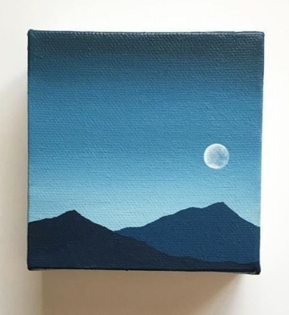

Apa Itu Conceptual Model?
Disclaimer! : Informasi yang saya sampaikan merupakan pemahaman pribadi yang didukung materi kuliah dan sumber online. Jika ada kesamaan, mohon hubungi admin.
Analogi: Sketsa Seorang Pelukis 🎨
Bayangkan Anda seorang pelukis. Sebelum melukis di kanvas, Anda membuat sketsa kasar di kertas. Sketsa ini menentukan objek utama apa saja yang akan ada (misalnya: gunung, sawah, petani) dan bagaimana hubungan antar objek tersebut (petani berada di sawah, di depan gunung). Anda tidak memikirkan detail seperti "merek cat apa yang dipakai" atau "ukuran kuas nomor berapa".
Conceptual Model adalah "sketsa" dalam dunia basis data. Ini adalah tahap paling awal di mana kita menentukan data apa saja yang penting (entitas) dan bagaimana data itu saling berhubungan (relasi).
Contoh Teknis: Diagram ERD
Sketsa dalam basis data biasanya digambar dalam bentuk ERD (Entity-Relationship Diagram). Jika kita ingin membuat sistem akademik, sketsanya akan mengidentifikasi dua entitas utama: Mahasiswa dan Mata Kuliah. Hubungan di antara keduanya adalah "Mengambil".
Diagramnya secara sederhana akan menunjukkan [Kotak: Mahasiswa] terhubung dengan [Kotak: Mata Kuliah] melalui sebuah [Diamond: Mengambil]. Dari diagram ini, kita bisa membaca: "Satu Mahasiswa bisa Mengambil banyak Mata Kuliah, dan satu Mata Kuliah bisa Diambil oleh banyak Mahasiswa".
Fokus Utama Conceptual Model
Pada tahap ini, kita tidak peduli dengan detail teknis seperti tipe data atau nama tabel. Fokus kita murni pada kebutuhan bisnis: informasi apa yang perlu kita simpan dan bagaimana mereka saling terkait. Sebuah sketsa yang baik akan menghasilkan database yang kokoh.
28 September 2025 ← Kembali ke Halaman Utama